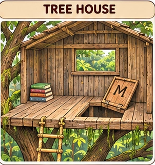

← Chapter 3 읽기 · 권별 캐릭터 기준Chapter 3 · Yikes!
4권에서 확정한 얼굴·비율과 앞 장의 따뜻한 선화·수채 색감을 유지한다. 생성 전 이 페이지와 실제 참조 이미지를 확인한다.
- 48–63번 16컷, 64–69번 6컷의 두 배치. 주머니 속 Peanut, 마른 복장 유지. 분홍 양말은 더 이상 손에 들지 않는다.
- 수관은 땅 위 덤불이 아니다. 나무집은 150피트 이상의 높은 나뭇가지 위에 있고 창문 높이까지 빽빽한 잎이 보인다. 초반 창밖에서 숲바닥이 바로 보이면 안 된다.
- 55번 Annie가 창문 밖으로 한 다리를 내민다. 56번 Jack이 안쪽에 남은 다른 다리를 붙잡는다. 57번 책의 세 층 설명. 58번 경고, 59번 실내로 돌아옴. 추락 장면을 만들지 않는다.
- 60번 바닥 문 주변의 잎을 치운다. 61번 밧줄 사다리가 큰 가지 사이로 내려간다. 63번 책을 유일한 배낭에 넣고 사다리로 나간다. 이때부터 배낭을 멘다.
- 64번 Jack이 먼저 내려가고 Annie가 위에서 뒤따른다. 65–69번 수관 아래 어두운 중간층. 땅은 아직 멀다. 숲바닥에 도착한 모습, 비, 카누나 맹수는 등장시키지 않는다.
- 공간 시트의 M 위치는 예시 오류이므로 적용하지 않는다. M은 바닥 표시이며 문짝의 로고로 옮기지 않는다. 4×4 실제 경계 탐지와 재단 검수 후 반영한다.
Jack

Annie와 Peanut


숲의 층과 나무집

